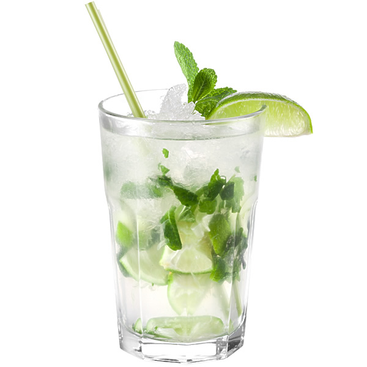

МОХИТО

Мохи́то (исп. Mojito) — коктейль на основе светлого рома и листьев мяты. Происходит с острова Куба, стал популярен в США в 1980-х. Коктейль входит в список «современной классики» международной ассоциации барменов (IBA) и классифицируется как лонг дринк.
Мохито традиционно состоит из четырёх ингредиентов: газированная вода, сахар, лайм и мята. Для охлаждения напитка в него добавляют колотый лёд. В алкогольный мохито добавляют пятый ингредиент — ром. В последнее время для ускорения приготовления коктейля вместо отдельных газировки и сахара используют различные сладкие напитки типа «Спрайт». В мохито комбинация сладкого и освежающего цитруса с мятой, которые, возможно, добавлялись в ром, чтобы «замаскировать» крепость последнего, сделала этот коктейль одним из самых популярных летних напитков. В некоторых отелях Гаваны в мохито добавляют также ангостуру.